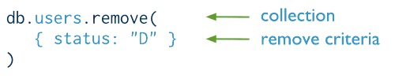

remove命令
基本概念:
需要删除文档时使用remove命令，删除文档可以清理掉不需要的数据，释放存储空间，提升检索效率
错误的删除会是一场灾难，因此在执行数据删除操作时需要非常的谨慎
语法格式:
db.collection.remove(
query,
justOne
)
语法描述:
query：BSON类型，删除文档的条件
justOne：布尔类型，true：只删除一个文档，false：默认值，删除所有符合条件的文档
语法描述:
将users集合中所有status="D"的文档删除操作，对比一下MongoDB和传统SQL数据库删除的操作
